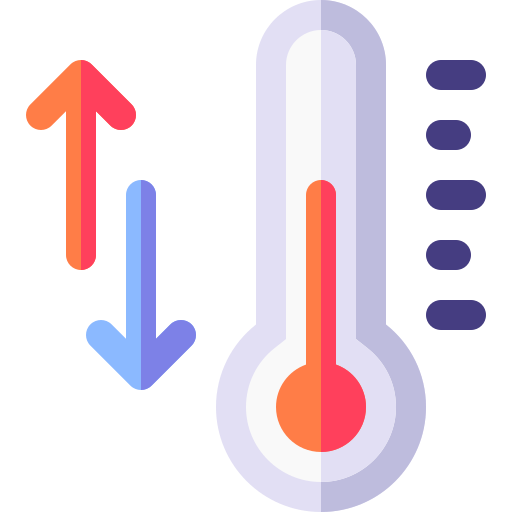
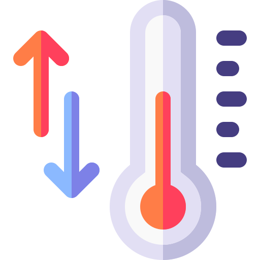

Este blog contém todo o histórico de atividades realizadas.
Converter Temperaturas:Um simples aplicativo utilizando PWA e Service Worker que converte temperaturas de e para Celsius, Kelvin, e Fahrenheit.
Um simples aplicativo utilizando PWA e Service Worker que converte temperaturas de e para Celsius, Kelvin, e Fahrenheit.
